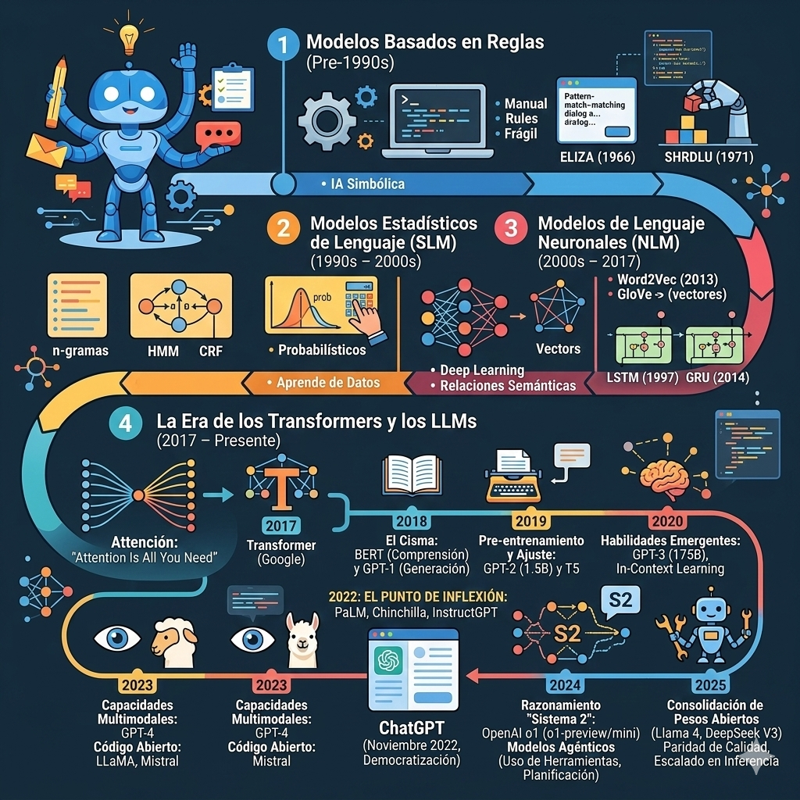
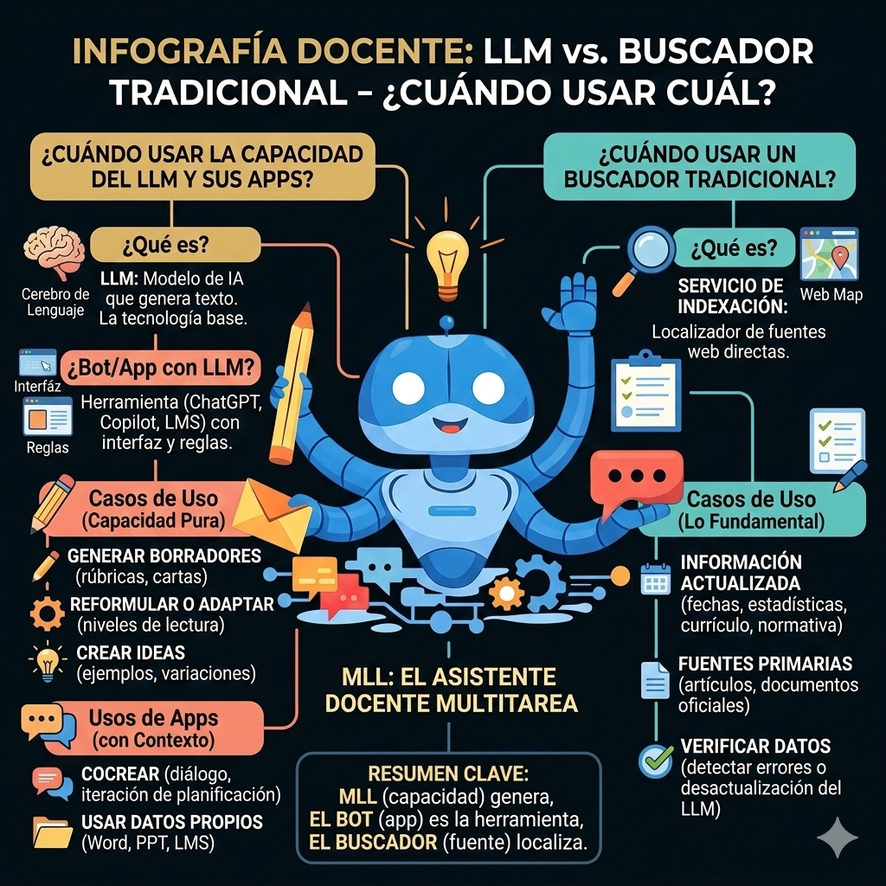

Lección 1.1: Conceptualización y panorama tecnológico
¿Qué es un Modelo de Lenguaje de Gran Tamaño (LLM)?
¿Dónde se sitúan los LLM?
Haz clic en cada capa para descubrir la jerarquía de la IA.
Un Modelo de Lenguaje de Gran Tamaño es un sistema de inteligencia artificial entrenado con enormes cantidades de texto para predecir la siguiente palabra más probable en una secuencia (Zhao et al., 2023). Para lograrlo, estos modelos utilizan la arquitectura Transformer, que permite analizar relaciones entre palabras en distintos puntos de una oración o un texto extenso, capturando tanto significado como contexto.
Desde la perspectiva de la inteligencia artificial, los LLM se sitúan dentro de la IA generativa y del aprendizaje profundo: utilizan técnicas de Deep Learning para realizar tareas de procesamiento del lenguaje natural, como clasificación, resumen y generación de textos, ampliando de forma notable la capacidad de los sistemas para trabajar con lenguaje humano en múltiples idiomas y temas (Oyarzo Espinosa & Usero Aragonés, 2024).
Durante el entrenamiento, el modelo ve millones de ejemplos de lenguaje y ajusta sus parámetros internos para minimizar el error en la predicción de las próximas palabras; al finalizar, puede generar respuestas coherentes, redactar textos, resumir, traducir y responder preguntas a partir de instrucciones en lenguaje natural (Zhao et al., 2023). Esta lógica de “predicción probabilística” explica por qué los LLM a veces “alucinan”: cuando no tienen suficiente base factual o el prompt es ambiguo, el modelo sigue produciendo la palabra “más probable” según sus estadísticas, aunque el contenido no sea verdadero (Russell & Norvig, 2020).
Simulador de Tokenización
Escribe cualquier idea abajo para ver cómo la IA descompone el lenguaje en piezas procesables (tokens).
En términos de funcionamiento interno, los LLM descomponen la entrada en unidades más pequeñas llamadas tokens (fragmentos de palabras, palabras completas o grupos de palabras), que son procesados por la red neuronal para calcular la probabilidad de cada token siguiente. Este proceso de tokenización permite manejar textos extensos, adaptarse a distintos idiomas y generar respuestas continuas, lo que explica su capacidad para sostener “conversaciones” o redactar textos largos en el ámbito académico (Oyarzo Espinosa & Usero Aragonés, 2024).
En educación, esta capacidad de generar texto permite que el LLM funcione como “motor de lenguaje” que impulsa distintas aplicaciones, capaz de:
- 🔵 proponer actividades y materiales,
- 🔵 sugerir explicaciones alternativas,
- 🔵 redactar borradores de retroalimentación,
siempre bajo la revisión crítica del docente (Damiano et al., 2024).
Además, los LLM se usan para automatizar tareas repetitivas (corrección preliminar, elaboración de planes de aprendizaje, generación de preguntas evaluativas) y ofrecer apoyo en investigación mediante resúmenes y sugerencias de fuentes, lo que puede optimizar el tiempo del profesorado (Oyarzo Espinosa & Usero Aragonés, 2024).
La evolución de los modelos de lenguaje

La evolución de la inteligencia artificial aplicada al lenguaje ha transformado radicalmente la forma en que las máquinas procesan la información, pasando de sistemas rígidos a modelos con capacidades de razonamiento casi humano. Este recorrido histórico se puede sintetizar en cuatro grandes etapas:
- 📅 Modelos Basados en Reglas (Pre-1990): Definidos por la IA Simbólica, dependían de reglas manuales y estructuras frágiles como las de ELIZA o SHRDLU.
- 📅 Modelos Estadísticos (1990 - 2000s): Introdujeron el aprendizaje basado en datos mediante n-gramas y modelos probabilísticos, convirtiendo la IA en algo más flexible.
- 📅 Modelos de Lenguaje Neuronales (2000s - 2017): El auge del Deep Learning y el uso de vectores permitió capturar relaciones semánticas profundas a través de arquitecturas como LSTM y GRU.
- 📅 La Era de los Transformers y LLMs (2017 - Presente): Iniciada por el mecanismo de "Atención", esta fase marca el punto de inflexión con la democratización de ChatGPT en 2022, el surgimiento del razonamiento de "Sistema 2" en 2024 y la consolidación de modelos de pesos abiertos de alta calidad en 2025.
LLM vs. buscador tradicional: ¿cuándo usar cuál?

Es importante que el docente distinga entre LLM, bot y buscador, ya que cumplen roles distintos y se complementan. Un LLM es el “cerebro de lenguaje”, el bot es la aplicación que usa ese “cerebro” para interactuar con el usuario, y el buscador es el “localizador de fuentes en la web”. En otras palabras, debe diferenciar entre el LLM como tecnología subyacente, las aplicaciones que lo utilizan y los buscadores tradicionales que ofrecen acceso directo a las fuentes de información.
LLM
Modelo de IA que genera texto a partir de instrucciones, pero no es, por sí mismo, una app de uso docente; es la tecnología base.
Bot o app con LLM
Recurso tecnológico concreto (ChatGPT, Copilot, un asistente en un LMS) que usa un LLM y añade interfaz, configuraciones, accesos a datos y reglas de uso.
Buscador tradicional
Servicio que indexa la web y responde con enlaces (Google, Bing, Perplexity, motores académicos), mostrando fuentes, fechas y procedencia.
¿Cuándo usar el LLM (como capacidad)?
En la práctica, el docente no “usa el LLM puro”, sino su capacidad dentro de una app, cuando necesita:
- 🧠 Generar borradores de textos: cartas a familias, rúbricas, instrucciones, descripciones de actividades.
- 🧠 Reformular o adaptar: simplificar un texto, ajustar a distintos niveles de lectura, traducir con matiz pedagógico.
- 🧠 Crear ideas y variaciones: ejemplos, preguntas, casos, explicaciones alternativas.
Aquí lo clave es ver el LLM como motor generador de lenguaje que se usa para producir y transformar texto, siempre con revisión crítica.
¿Cuándo usar un bot o app con LLM?
Se recurre a un bot o app con LLM cuando, además de generar texto, necesitas un contexto y unas funciones concretas:
- 📱 Un bot conversacional (como ChatGPT).
- 📱 Explorar ideas en diálogo, pedir aclaraciones, iterar una planificación.
- 📱 Probar prompts, diseñar actividades, cocrear materiales fuera del entorno institucional.
- 📱 Un asistente integrado (como Copilot en Word, PowerPoint, LMS, etc.).
- 📱 Trabajar directamente sobre tus documentos: resumir actas, crear borradores de informes, extraer listas de tareas.
- 📱 Generar presentaciones, esquemas o tablas usando archivos y datos que ya tienes en la plataforma.
En resumen: usas el bot cuando necesitas una herramienta concreta, con interfaz y funciones específicas, que aplica la capacidad del LLM a tu contexto real de trabajo.
¿Cuándo usar un buscador tradicional?
El buscador sigue siendo insustituible cuando lo importante es la fuente:
- 🎯 Buscar información actualizada (fechas, estadísticas recientes, cambios de currículo, normativa vigente).
- 🎯 Localizar y citar fuentes primarias (artículos científicos, documentos oficiales, comunicados de agencia).
- 🎯 Verificar datos que el bot/LLM ha generado o sospechas que pueden estar desactualizados o ser erróneos.
Aquí el foco no es que alguien “escriba por ti”, sino encontrar quién lo dijo, cuándo y dónde.
La literatura reciente subraya que, en contextos educativos, la combinación de estos enfoques, primero localizar fuentes confiables y luego usar aplicaciones basadas en LLM para ayudar a sintetizar, adaptar o explicar, ofrece más precisión y control pedagógico.
• Si necesitas información comprobable y citada → empieza por el buscador.
• Si necesitas texto, ideas o adaptaciones a partir de esa información → usa un bot/app con LLM.
• Si quieres entender la tecnología y sus límites, enseñar su funcionamiento o decidir qué recurso tecnológico adoptar → piensa en el LLM como el “motor” que está detrás y en cómo se integra en las aplicaciones que tus estudiantes y tú ya usan.
Ecosistema actual: ChatGPT y Microsoft Copilot
Dos herramientas son especialmente relevantes para docentes por su presencia en entornos educativos y administrativos:
Funciona como asistente conversacional general (bot) construido sobre LLM de la familia GPT. En su modelo GPT-4o, ofrece capacidades multimodales (texto, imágenes, archivos) con un gran equilibrio entre velocidad y calidad. Ideal para experimentación y diseño textual "neutro".
Integrado directamente en Microsoft 365 (Word, PowerPoint, Excel). Se conecta con tus archivos institucionales y correos, lo que facilita automatizar informes, minutas y presentaciones directamente sobre tus datos, reduciendo significativamente la carga administrativa.
La diferencia práctica es que ChatGPT es un "espacio neutro", mientras que Copilot se integra en el flujo real de trabajo de las escuelas que usan Office 365. Esto es fundamental para las instituciones que ya han invertido en el ecosistema de productividad de Microsoft, sobre todo en escuelas que ya usan Microsoft 365 como plataforma base.
🎉 ¡Felicidades!
Has culminado la lección 1.1 del programa de formación profesional. Has dado un paso clave al comprender qué es un LLM, cómo funciona como motor de lenguaje y cuándo conviene usarlo frente a un buscador tradicional.
Checkpoint de Saberes
Responde a este breve quiz para clarificar tus ideas sobre LLM, bots y buscadores.
Referencias de la Lección
- • Damiano, R. F., et al. (2024). Early perceptions of teaching and learning using generative AI in higher education.
- • Hargreaves, A., & Fullan, M. (2012). Professional capital: Transforming teaching in every school.
- • Oyarzo Espinosa, J., & Usero Aragonés, L. (2024). Grandes modelos lingüísticos. Guía Práctica.
- • Zhao, W. X., et al. (2023). A survey of large language models.